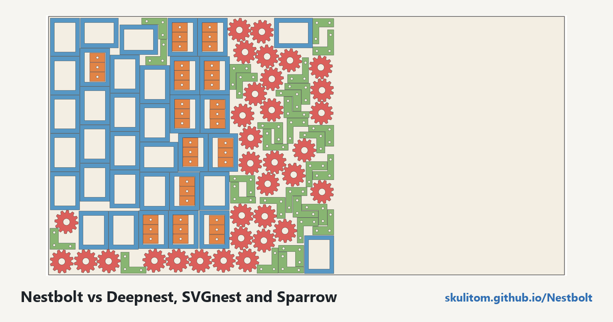

A Deepnest alternative, with the benchmark to inspect
In Nestbolt's frozen v1 benchmark, run on 2026-10-13, Nestbolt used 8.5% less material at the median than the best of Deepnest, SVGnest and Sparrow at equal 60-second budgets, and 9.6% at 300 seconds on the long subset; Sparrow still wins 8 of the 56 jobs at 60 seconds. The Deepnest in that run was deepnest-next as of 6 October 2026 (revision 1e7ba6e), not the 1.6.0-beta.0 and 1.6.0-beta.1 pre-releases that followed on 20 and 21 November, which we have not run (what changed in them).
We make Nestbolt. The benchmark numbers are ours, from the run described below. Everything on this page about Deepnest's 1.6.0 pre-releases comes from their release notes, pull requests, README and commit lists on GitHub, read on 2026-11-21 and 2026-11-22. Last checked: 2026-11-22.
Free and MIT-licensed; your files never leave your computer.
Those figures belong to the frozen 75cbb32 build in the final acceptance run of 2026-10-13. The hosted app runs a preview build from main, newer than v0.2.0-alpha.1. The preview makes no new comparison against competing tools; stable v0.1.0 remains a download.
Nestbolt vs Deepnest, SVGnest and Sparrow
| Budget | Valid Nestbolt layouts | Less material than the best competitor (median) | Wins or ties |
|---|---|---|---|
| 60 s | 375/375 | 8.5% | 48 of 56 |
| 300 s (long subset) | 60/60 | 9.6% | 11 of 11 |
At 60 seconds, Nestbolt uses less material than Deepnest on all 55 jobs where Deepnest produced a layout, with a median reduction of 9.9%. It uses less than SVGnest on all 36 jobs where SVGnest produced a layout, with a median reduction of 14.4%. The comparison above uses the best of the three competitors on each job.
The results page provides every per-job number, tool revision, seed and the hardware. BENCHMARKS.md records every run, including failures. Read those alongside the headline: the different job counts are part of the result.
How the benchmark was run
The final acceptance run used 75 frozen sheet jobs: 35 academic and 40 maker jobs. Ten were held out from all tuning. Each tool had equal time budgets and one CPU core, with five fresh seeds each. Each competitor used the better of its two settings, and every layout was checked by an independent validator.
The first final run, build 484ce8b, stopped with an error on one job. The fix is in 75cbb32, and both runs are published. You can inspect the earlier run as well as the final results; the benchmark log preserves the failures.
Deepnest 1.6.0-beta.0 and 1.6.0-beta.1: what changed after this benchmark
On 20 November 2026 the deepnest-next project published v1.6.0-beta.0, and on 21 November v1.6.0-beta.1. Both are marked as pre-releases. Its release before them was v1.5.6, on 19 May 2025, which GitHub still shows as the latest release. The benchmark above ran deepnest-next at revision 1e7ba6e of 6 October 2026, a main-branch revision dated after 1.5.6, 29 commits before the 1.6.0-beta.0 tag (GitHub's comparison) and 54 before the 1.6.0-beta.1 tag (comparison). We have not run either pre-release, so the table above does not measure them.
The main changes in the 29 commits up to 1.6.0-beta.0, from their pull requests:
- Two fixes for lost parts. A sheet that fits no part is now skipped: before, "a small offcut listed before a big sheet gave 0/N placed". Rectangles that start at 0/0 no longer disappear from the parts list and the cut file when a transform applies (pull request 210).
- No silent freezes. A nest no longer freezes silently when a worker fails: the worker now always answers, and a crashed one is replaced (pull request 210).
- More rotation angles. The part-rotations setting now accepts up to 360 angles, up from 32. Its help text warns that values above 32 are experimental and make nesting much slower (pull request 214).
- PLT (HPGL) export for plotters and cutters (pull request 203), Fedora
.rpmpackages (191) and a move to Electron 45 (212). - A security fix. The notification window, which shows feed and release-note HTML, is now sandboxed (pull request 210).
The 1.6.0-beta.0 release notes list pull requests going back to December 2024, so they also name "Fix: overlapping and nesting in holes" (105) and "Material utilisation" (111). Both merged in April 2025 and were already in the notes for v1.5.5 of 9 May 2025. They are not new in 1.6, and both are in the revision we benchmarked.
1.6.0-beta.1 followed a day later, published on 21 November 2026 at 16:24 UTC, 25 commits after 1.6.0-beta.0 (comparison). Its release notes list eleven pull requests. These are the ones that change which parts are placed, and where, in the words of the pull requests:
- Parts no longer land outside a notched sheet. With "Use rough approximation" on, every polygon was replaced with its convex hull, "sheets included", so "parts landed where there is no material". Sheets are no longer replaced by their convex hull (pull request 218).
- The search starts at the drawing's orientation. Deepnest's genetic algorithm started each part at a random angle. With 360 rotations, in the pull request's own test, "all 9 results after 90 s placed only 1 of 2 parts". It now starts at the angle the part was drawn at, and the results list keeps the 10 best layouts (pull request 218).
- Exact fits are placed. A part exactly as big as its sheet had no valid position: "0/1 placed, while 999.9 mm fitted" (pull request 224).
- Other rotations are tried when a part has no room. A part that fitted the empty sheet at its chosen rotation but had "no free position next to the parts already placed" was left unplaced, "even if another rotation fit" (pull request 226).
- An outline inside a hole is a part of its own. Parts drawn inside another part's cut-out were never nested ("a model-kit DXF imported 45 instead of 48 parts"), and "other parts were nested on top of them" (pull request 230).
The other seven cover DXF export, which now writes its unit into the file (222), rounded rectangle corners (225), full-precision SVG coordinates (227), a 60-second time limit on DWG and DXF conversion requests (220), the nest view (219), file dialogs (221), and tests with a dependency update (228). The fixes in the list above change how parts are placed, so Deepnest 1.6.0-beta.1 may do better than the revision in our table. We have not measured it.
Deepnest's main branch has moved on again since that tag: 4 more commits when we read it on 22 November 2026 (the newest at 01:22 UTC), none of them in a release yet. Three are fixes in the nesting code: "a simplified hole must not cover the part's material", "a rotation retry that completes the turn is 0 degrees, not 360" and "key the NFP cache by the real rotation, not parseInt of it" (commits since the tag).
When to choose Deepnest instead
From Deepnest's README at the 1.6.0-beta.1 tag, read on 2026-11-22; it is the same text as at the 1.6.0-beta.0 tag. We did not run either version.
- You want a desktop app. Deepnest is a desktop program with downloads for Windows x64, macOS (Apple silicon and Intel) and Linux (x64 and arm64). Nestbolt's app runs in a browser tab, and its native tools cover Windows x64, Linux x64 and macOS on Apple silicon.
- Your drawings are EPS, PS or DWG, or your cutter takes PLT. Deepnest's README lists SVG, EPS and PS import, DXF and DWG import "via conversion service", and SVG, DXF, PLT (HPGL) and JSON export. PLT export is in the 1.6.0 pre-releases; v1.5.6, which GitHub marks as the latest release, does not have it. Nestbolt reads SVG and DXF, and LightBurn projects as a preview feature; it writes SVG, DXF and LightBurn files.
- You want saved settings per material or machine. Deepnest's README lists presets you can save and reload. Nestbolt's README lists projects saved in the browser or as a ZIP, but no presets per material or machine.
On material use, the tool that beats Nestbolt on some jobs in this benchmark, which ran Deepnest at revision 1e7ba6e, is Sparrow; the next section has the numbers.
Where Sparrow still wins
Sparrow, which Nestbolt builds on, wins eight jobs at 60 seconds. Seven are one-sheet jobs that Nestbolt hands to Sparrow itself after its own first layout. Sparrow therefore runs with slightly less time inside Nestbolt on those jobs; running it separately is 0.03–2.4% better. The eighth job uses two sheets and is 0.34% better.
That misses Nestbolt's own 60-second bar: wins or ties on 90% of jobs and never more than 1% worse. The 300-second, strip-parity and speed bars are met. The results and status evidence show the boundaries of those conclusions. A median saving does not promise a saving on every drawing.

m-mechanical-frame-inserts, seed 0, sheet turned to landscape. 138 parts, all 39 inserts inside frame windows, occupy 56% of a 2440 × 1220 mm sheet, leaving one offcut. The best competitor used 62% on this job. This illustration is a development run, separate from the final acceptance table.Should you switch?
Nestbolt is free and MIT licensed. If you want to try it with your own drawing, these are the parts of its workflow to evaluate:
- An independent validator checks overlap, spacing, containment, rotations and quantities; invalid layouts are never returned.
- Per-sheet SVG and DXF exports use transformed original curves rather than re-polygonised outlines.
- The browser app runs locally on your computer with nothing uploaded, and shows the best layout while the search runs.
- Native CLI tools and an MCP server support other workflows (see nesting for AI agents). Repeatable budgets reproduce a layout with the same build, inputs, work budget and seed unless the real-time limit is reached, which is reported explicitly.
The benchmark compares material use at equal time budgets, nothing else. It does not establish that one tool is better for every workflow. Try a representative file, review the import and exported curves, and choose spacing and rotation permissions for your job. Nestbolt gives no machine-safety or fit certification.
For a practical starting point, follow the SVG/DXF browser guide or inspect the five examples and their settings. The compared projects are Deepnest, SVGnest and Sparrow; their GitHub repositories are linked here so you can inspect each directly.